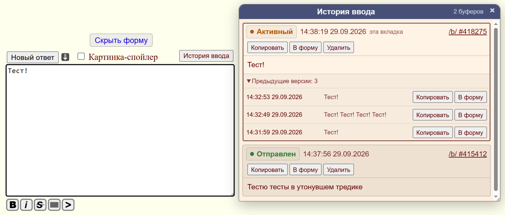

Что умеет скрипт
- Сохраняет вводимый текст примерно через 2 секунды после изменений.
- Немедленно сохраняет актуальный текст при скрытии или закрытии страницы.
- Хранит отдельный буфер для каждой формы во вкладке, даже если в двух вкладках открыт один и тот же тред.
- После перезапуска браузера пытается автоматически вернуть подходящий активный черновик в форму.
- После успешной отправки помечает буфер как отправленный и начинает новый.
- Различает статусы «Активный», «Отправлен» и «Брошен».
- Показывает общую историю черновиков из разных тредов в отдельном плавающем окне.
- Позволяет копировать старые тексты и вставлять их обратно в текущую форму.
- Хранит несколько предыдущих версий текста, чтобы случайное массовое удаление не уничтожало единственную копию.

Установка
- Установите расширение Tampermonkey в браузер.
- Нажмите кнопку «Установить userscript» вверху этой страницы.
- Tampermonkey откроет страницу установки скрипта.
- Подтвердите установку.
- Откройте или перезагрузите страницу Dobrochan.
Как работает
Скрипт сохраняет черновики в локальном хранилище Tampermonkey. Вместе с текстом записываются номер доски и треда, технический идентификатор буфера и время изменения. История никуда отдельно не отправляется.
У каждой вкладки и каждого активного буфера есть собственный идентификатор. Если браузер был закрыт с незавершённым сообщением, при следующем запуске скрипт ищет подходящий активный буфер того же треда и, если его удаётся однозначно сопоставить с формой, подставляет текст обратно.
Если сопоставление не удалось, запись не удаляется, а получает статус «Брошен» и остаётся доступной через историю. После успешной отправки собственный пост определяется по поведению Dollchan и помечается как «Отправлен». Завершённые записи автоматически очищаются примерно через 180 дней, активные автоматически не удаляются.
Совместимость и ограничения
- Скрипт ориентирован на текущую форму Vichan на
rf.dobrochan.net. - Поддерживается перемещение, скрытие и плавающий режим формы Dollchan.
- Определение успешной отправки опирается на поведение Dollchan и класс собственных постов
.de-mypost. - Если структура сайта или Dollchan существенно изменится, userscript может потребовать обновления.